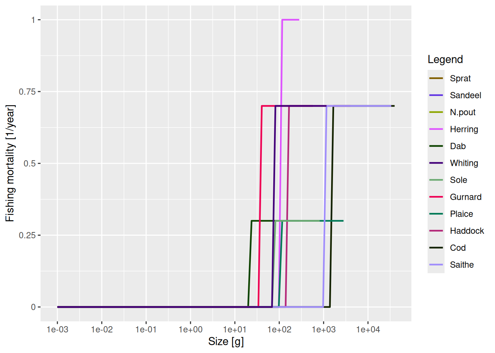

In mizer, simulations are performed using the project() function. This function takes a MizerParams object and projects it forward through time, starting from an initial population abundance and with a pre-determined fishing effort pattern. In this tutorial we take a detailed look at how the project() function works and the different ways in which effort and time can be set up.
Running a projection with project() requires various arguments:
A MizerParams object - The model parameters (see previous tutorial);
Fishing effort - The fishing effort of each gear through time;
Time arguments - Arguments to control the time of the simulation, including the simulation time step, the length of the simulation and how frequently the output is stored.
Initial population - The initial abundances of the stocks and the resource spectrum;
The help page for project() describes the arguments in more detail.
The MizerParams class was explored in the previous tutorial. In this tutorial we will look at the other arguments and use examples to perform some simple projections.
The time arguments
There are four arguments that control time in the project() function: dt, t_max and t_save and t_start. All of them have default values.
t_max determines the maximum time of the simulation (in years), i.e. how long the projection is run for. The default value for t_max is 100.
dt is the time step used by the numerical solver in project(). The smaller the value, the longer the model will take to run. Sometimes it is necessary to use a small value to avoid numerical instabilities. The default value is 0.1.
t_save sets the interval (in years) at which project() stores the state of the model in the resulting MizerSim object. For example, if t_save = 2, the state of the model is stored at t = 0, 2, 4… etc. t_save must be a multiple of dt. The default value of t_save is 1.
t_start is the year in which the simulation starts. This is only needed if you want to label the simulation results by the actual year rather than by the number of years that have elapsed since the start of the simulation.
Setting the fishing effort
The fishing effort argument describes the effort of the fishing gears in the model through time. We have already seen that information on the fishing gears and their selectivities and catchabilities is stored in the MizerParams object.
The simplest way is by passing the effort argument as a single number. This value is then used as the fishing effort by all of the gears at each time step of the projection, i.e. fishing effort is constant throughout the simulation and is the same for all gears. We have seen this method in the community and trait-based model sections above. The length of the simulation is determined by the t_max argument.
The second method for setting the fishing effort is to use a numeric vector that has the same length as the number of gears. The values in the vector are used as the fishing effort of each gear at each time step, i.e. again, the fishing effort is constant through time but now each gear can have a different constant effort. The effort vector must be named and the names must be the same as the gears in the MizerParams object. Again, the length of the simulation is determined by the t_max argument.
Finally, the most sophisticated way of setting the fishing effort is to use a two-dimensional array or matrix of values, set up as time step by gear. Each row of the array has the effort values of each fishing gear at a particular time time. The array must have dimension names. The names of the first dimension (the row names) are the times. The steps between the times can be greater than the dt argument but the times must be increasing. The names of the second dimension (the column names) must match the names of the gears in the MizerParams object used in the projection.
It is not necessary to supply a t_max argument when the effort is specified as an array because the maximum time of the simulation is taken from the dimension names. If a value for t_max is also supplied it is ignored.
Setting the initial population abundance
When running a simulation with the project() function, the initial populations of the species and the resource spectrum need to be specified. Default values for the initial values are automatically set when creating a MizerParams object. However you can change these by assigning new values to initialN() and initialNResource(). initialN() should be set to a matrix (with dimensions species x size) that contains the initial abundances of each species at size (the sizes must match those in the species size spectrum). initialNResource to a vector of the same length as the the length of the full spectrum.
Projection examples
In this section we’ll look at how to run simulations with the project() function. The examples will focus on how fishing effort can be specified in different ways. The results of the simulations will not be explored in detail. We will leave that for the section on exploring the simulation results..
Remember that the fishing mortality by size on a species is the product of the selectivity, the catchability and the effort of the gear that caught it. We have not specified any catchability values in the species parameter data.frame so the default value of 1 is used. The selectivity ranges between 0 and 1. This means that in these examples the fishing mortality of a fully selected species is given by the effort of the gear that catches it.
Projections with single, simple constant effort
When we use a single value for the effort argument, the value is used as a constant effort for all the gears. This method can be particularly useful for quickly projecting forward without fishing (you just set the effort argument to 0).
We will use a MizerParams object with four gears. This example MizerParams object is called NS_params and is shipped with the mizer package. Let’s have a look at its summary:
An object of class "MizerParams"
mizer version: 3.0.0.9003
Created: 2021-09-03 20:29:38
Modified: 2026-06-24 13:50:03
Consumer size spectrum:
minimum size: 0.001
maximum size: 39851.3
no. size bins: 100
Resource size spectrum:
minimum size: 2.12182e-13
maximum size: 9.82091
no. size bins: 179 (226 size bins in total)
Species details:
An object of class "species_params" containing parameters for 12 species:
species w_inf w_mat w_min
Sprat 33.0 13 0.001
Sandeel 36.0 4 0.001
N.pout 100.0 23 0.001
Herring 334.0 99 0.001
Dab 324.0 21 0.001
Whiting 1192.0 75 0.001
Sole 866.0 78 0.001
Gurnard 668.0 39 0.001
Plaice 2976.0 105 0.001
Haddock 4316.5 165 0.001
Cod 39851.3 1606 0.001
Saithe 39658.6 1076 0.001
With 3 other parameters: f0, beta, sigma
Fishing gear details:
Gear Effort Target species
----------------------------------
Industrial 0.00 Sprat, Sandeel, N.pout
Pelagic 1.00 Herring
Beam 0.50 Dab, Sole, Plaice
Otter 0.50 Whiting, Gurnard, Haddock, Cod, Saithe
As well as thinking about the effort argument we also need to consider the time parameters. We will project the populations forward until time equals 10 (t_max = 10), with a time step of 0.1 (dt = 0.1), saving the output every time step (t_save = 1). We use a constant effort value of 1.0.
The resulting sim object is of class MizerSim. At this point we won’t explore how the results can be investigated in detail. However, we will use the basic summary plot that you have seen before:
The big difference between this multispecies model and the trait-based model can be seen in the range of predation mortality and feeding level values. With the trait-based model all the species had the same predation mortality and feeding level patterns. Here the species all have different patterns, driven by their differing life history characteristics and the heterogeneous interaction matrix.
You can also see in the above figure that each species has different fishing selectivity (see the fishing mortality panel). Remember that the default setting for the fishing gears is a knife-edge gear where the knife-edge is positioned at the species w_mat parameter.
The effort through time can be inspected with getEffort() (we use the head() function to just show the first few lines).
The effort slot shows the effort by time and gear. In this example, we specified the effort argument as a single numeric of value 1. As you can see this results in the same effort being used for all gears for all time steps.
If we decrease t_save but keep t_max the same then we can see that the time dimension of the effort array changes accordingly. This will also be true of the simulation results returned by N() and NResource(). Here we reduce t_save to 0.5, meaning that the effort and abundance information is stored at t = 1.0, 1.5, 2.0 etc.
As mentioned above, we can also set the effort values for each gear separately using a vector of effort values. This still keeps the efforts constant through time but it means that each gear can have a different constant effort.
We need to create a named vector of effort, where the names match the gears. For example, here we want to switch off the industrial gear (i.e. effort = 0), keep the pelagic gear effort at 1, set the effort of the beam trawl gears to 0.3 and the effort of the otter trawl gear to 0.7. We set the effort like this:
You can see that the effort for each gear is constant but each gear has the effort that was specified in the effort argument.
This impact of this can be seen plotting the fishing mortality. There is a dedicated plot, plotFMort(), that shows the fishing mortality at size for each species at a particular time step (the default is the final time step). The fishing mortality on each of the species is determined by the effort of the gear that caught it.
plotFMort(sim)

An example of changing effort through time
In this example we set up a more complicated fishing effort structure that allows the fishing effort of each gear to change through time. As mentioned above, to do this, effort must be supplied as a two dimensional array or matrix. The first dimension is time and the second dimension is gear. The dimensions must be named. The gear names must match the gears in the MizerParams object. Also, as mentioned above, if effort is passed in as an array then the length of the simulation is determined by the time dimension names and the argument t_max is not used. Instead the simulation runs from the earliest time in the effort array to the latest.
In this example, we will project forward from time t=1 to time t=10. The effort of the industrial gear is held constant at 0.5, the effort of the pelagic gear is increased linearly from 1 to 2, the effort of the beam trawl decreases linearly from 1 to 0, whilst the effort of the otter trawl decreases linearly from 1 to 0.5.
First we create the empty effort array:
gear_names<-c("Industrial","Pelagic","Beam","Otter")times<-seq(from =1, to =10, by =1)effort_array<-array(NA, dim =c(length(times), length(gear_names)), dimnames =list(time =times, gear =gear_names))
Then we fill it up, one gear at a time, making heavy use of the seq() function to create a sequence:
effort_array[,"Industrial"]<-0.5effort_array[,"Pelagic"]<-seq(from =1, to =2, length =length(times))effort_array[,"Beam"]<-seq(from =1, to =0, length =length(times))effort_array[,"Otter"]<-seq(from =1, to =0.5, length =length(times))
The first few rows of the effort array are shown as an illustration:
The first row gives the effort between times 1 and 2, the second between times 2 and 3, and so on. The time 10 row in the array is not actually used, except to set the final time for the simulation.
Now we can use this effort array in the projection:
As you can see, it can be quite fiddly to set up a complicated effort array so it may be easier to prepare it in advance as a .csv file and read it in. We give an example of this in the section on the North Sea model.
Note that in this example we set up the effort array so that the effort was set every whole time step (e.g. time = 1, 2, etc). This does not have to be the case and it is possible to set the effort more frequently than that, e.g. at time = 1.0, 1.5, 2.0, 2.5 etc. The only restriction is that the difference between time dimension names must be at least as big as the dt argument.